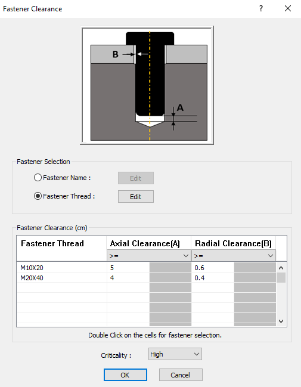
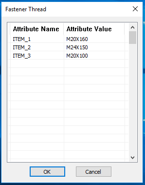
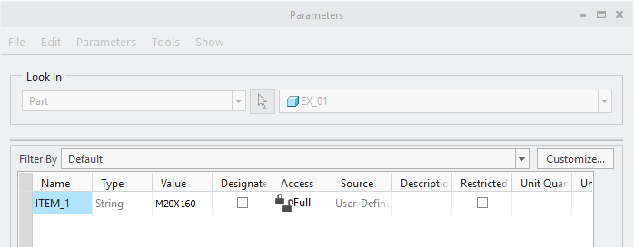

留め具について、軸方向クリアランス、半径方向クリアランス、またはその両方は、指定値以上であるか、または指定範囲内である必要があります。
ユーザーは、ルールに対して以下の入力を指定する必要があります。
留め具名 - ルールを検証するための留め具名です。ドロップダウンリストから留め具を選択します。リストは ハードウェアデータベース のデータに基づいて作成されます。
軸方向クリアランス - 留め具に期待される軸方向クリアランスです。
半径方向クリアランス - 留め具に期待される半径方向クリアランスです。
注記:
半径方向クリアランスは、最後のコンポーネントを除くすべてのコンポーネントに対して計算されます。最後のコンポーネント（ナット／ねじ付きボス）は、留め具とねじ結合しているものと仮定されます。
このルールは、留め具とクリアランス穴の間にあるすべての最小半径方向クリアランスを特定し、失敗インスタンスを個別に表示します。
留め具構成では、以下のオプションから選択します。
留め具名 – ユーザーは留め具の品番を構成できます。
留め具ねじ – ユーザーは、パラメータ名として留め具ねじを構成できます。

留め具ねじ のラジオボタンを選択して Edit ボタンを有効にします。Edit ボタンをクリックして、次の画像に示すように、留め具ねじの属性名と値を構成します。
ユーザーは、Fastener Thread ダイアログボックスで必要に応じて属性名と属性値を構成できます。

このルールは、属性名については完全一致（文字列の完全一致）で比較されます。属性値については、ユーザーが指定した値と比較され、コンポーネントの実際の属性値に含まれる部分文字列として一致するものが対象となります。
例えば、このルールは文字列タイプ／パラメータタイプとして以下のように扱います。
属性名 = ITEM_1
属性値 = M20X160

Fastener 列の 空白部分 をダブルクリックし、ドロップダウンメニューから必要な 留め具 を1つずつ選択します。
各留め具に対して、標準の軸方向および半径方向クリアランス値を追加します。
完了したら、OK ボタンをクリックします。
A = 軸方向クリアランス
B = 半径方向クリアランス
ユーザーは、ルール構成で Ctrl+I コマンドを使用して、Excel シートテンプレートからハードウェアデータを一括でインポートできます。データがインポートされると、DFMPro ハードウェアデータベースで利用可能になります。
ハードウェアを構成するには、Hardware Database を参照してください。
標準テンプレート形式:
|
F |
A |
B |
N |
|
Fastener_1 |
1.0 |
2.0 |
ITEM_1 |
|
Fastener_2 |
2.0 |
2.5 |
ITEM_2 |
|
Fastener_3 |
3.0 |
3.5 |
ITEM_3 |
標準テンプレート形式（旧）
|
F |
A |
A1 |
B |
B1 |
N |
|
Fastener_1 |
1.0 |
1.0 |
2.0 |
7.0 |
ITEM_1 |
|
Fastener_2 |
2.0 |
2.0 |
2.0 |
8.0 |
ITEM_2 |
|
Fastener_3 |
3.0 |
3.0 |
6.0 |
9.0 |
ITEM_3 |
標準テンプレート形式（新）
|
N |
V |
|
ITEM_1 |
M20X160 |
|
ITEM_2 |
M24X150 |
|
ITEM_3 |
M20X100 |
留め具ねじ用 標準テンプレート形式
F = 留め具名
A = 軸方向クリアランス（下限）
A1 = 軸方向クリアランス（上限）
B = 半径方向クリアランス（下限）
B1 = 半径方向クリアランス（上限）
N = 属性名
V = 属性値
注記:
Excel の留め具名にはパーツ拡張子が含まれます。（例: Fastener_1.prt）
留め具名にはスペースを含めないでください。（例: Fastener 1）
Hardware Database ダイアログボックスで必須のフィールドは Hardware Name です。
A1 および B1 列は、軸方向および半径方向クリアランス値が範囲内として定義されている場合にのみアクセス可能になります。
Fastener Thread オプションを使用するには、DFMPro for Creo Parametric 8.0 バージョンからデータベースを更新してください。
このルールは、DFMPro Settings に基づき、トップレベル アセンブリ パーツ で実行できます。
ユーザーはワイルドカード文字を使用してコンポーネント名を構成できます。
*dia*（コンポーネント名に dia または DIA を含む）
*_dia（名前が _dia / DIA で終わる）
dia*（名前が _dia / DIA で始まる）